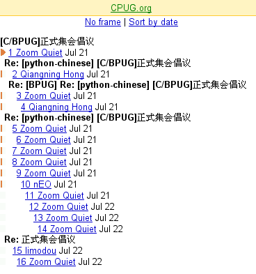
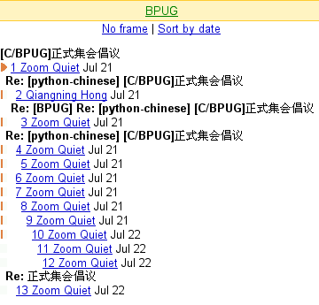
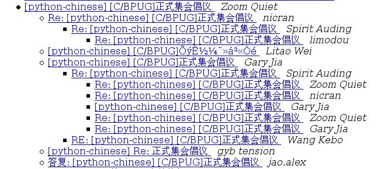
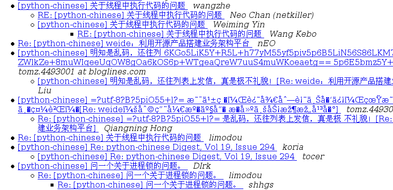
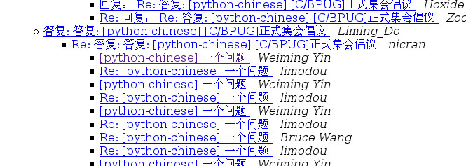
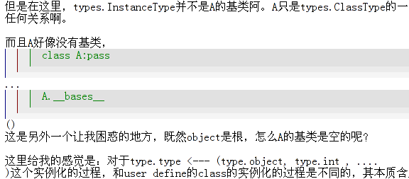

 



> > * A.B.: > > > Do you like top-posting? > * N.N.: > > No. * A.B.: > How come? Because it messes up the flow of reading. > What do you do instead? I prefer to reply inline.
Hello A.B.! Because it messes up the flow of reading. I prefer to reply inline. Yours, N.N. > On Wednesday, A.B. wrote: > Hello N.N.! > > How come? > What do you do instead? > > Sincerely, > A.B. > > > On Tuesday, N.N. wrote: > > Hello A.B.! > > > > No. > > > > Yours, > > N.N. > > > > On Monday, A.B. wrote: > > > Hello N.N.! > > > > > > Do you like top-posting? > > > > > > Sincerely, > > > A.B.

规范的目的在于进步
祝CPUG/BPUG能有更美好的明天！